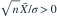
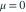

独立同分布于
独立同分布于  ，
， 已知。对 与 ，记 。下列哪项给出水平为 0.05 的一致最大功效检验？
已知。对 与 ，记 。下列哪项给出水平为 0.05 的一致最大功效检验？- A当 时拒绝
- B当 时拒绝
- C当 时拒绝
- D当

时拒绝
我已思考，展开答案与解析
正确答案：C
- 已知方差的正态族对样本和具有单调似然比，右侧备择对应右尾拒绝域。
- 原假设内拒绝概率在边界

处最大，标准化统计量此时为标准正态，故临界值为 1.645。
易错提醒复合原假设的水平是原假设参数集合内拒绝概率的上确界。
原模拟卷 A · 模拟卷 A 第 39 题
原创